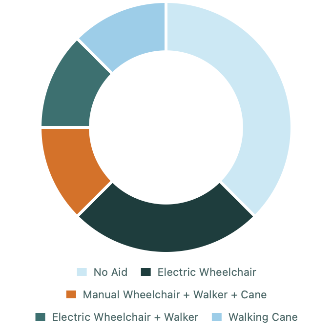
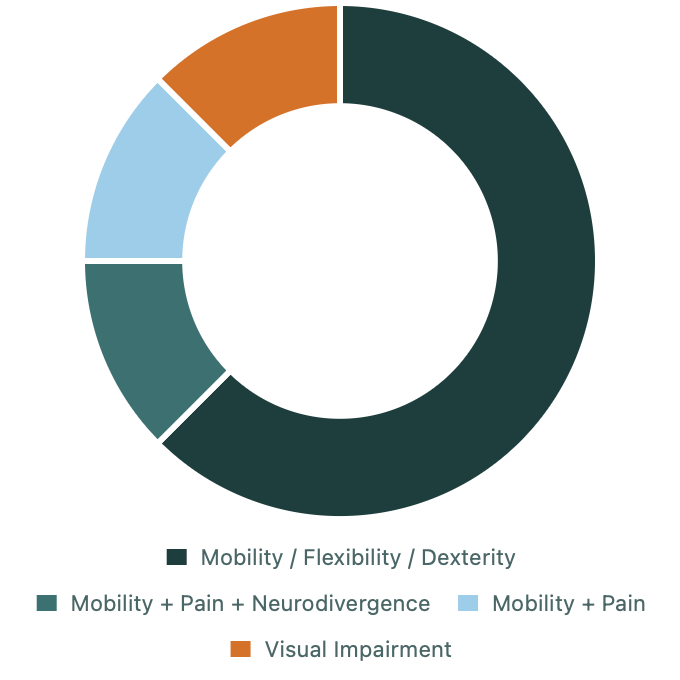
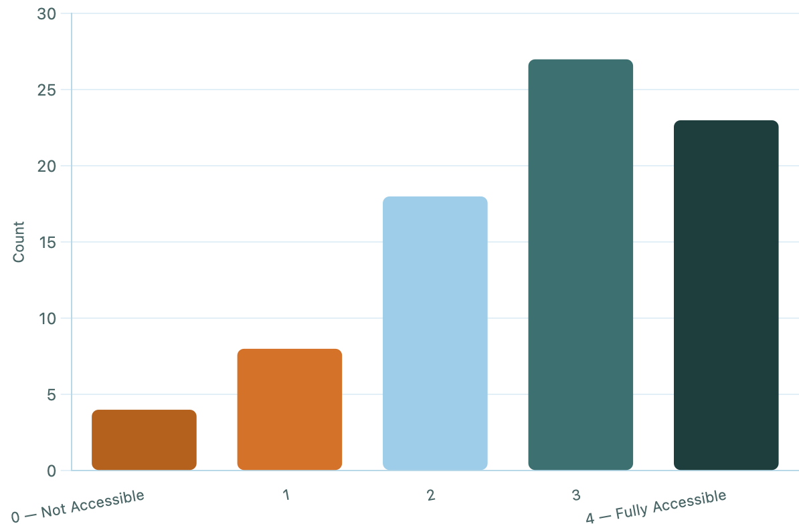
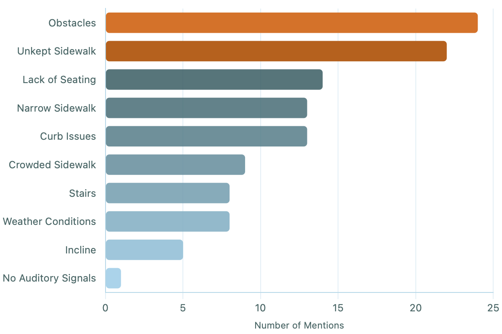
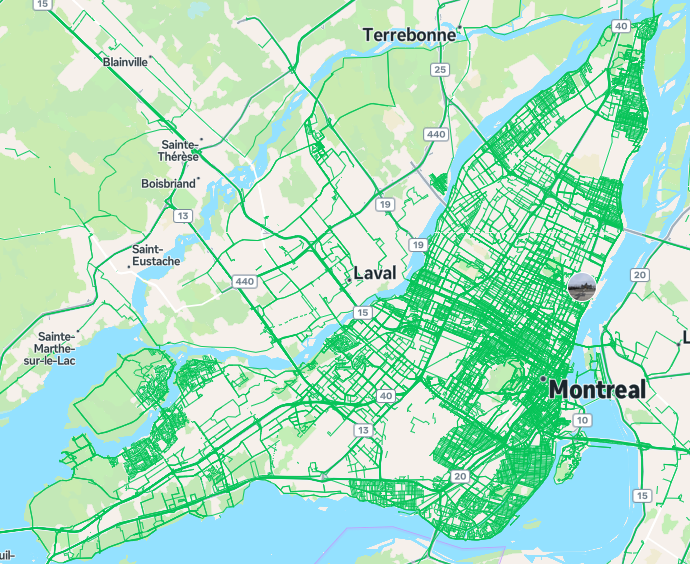

Dataset
No publicly available dataset combined street-level imagery with per-mobility-aid accessibility labels at scale for Canadian cities. We built one from scratch to help address this gap.
Explore our Dataset
Average score across 5 mobility aid types & 3 camera views. Click any point for details.
Ground-Truth Survey Campaign
To build credible accessibility labels, the team conducted a structured survey campaign where we presented real Montreal street images to community members and disability advocates for manual rating.
Participants were shown street-level photographs of Montreal sidewalks and asked to rate each image on a scale of 0 to 4 — from Not Accessible to Fully Accessible — for their specific mobility aid. Survey distribution was supported by Promo-Accès and extended through 30+ disability community organizations to reach a diverse cross-section of the Montreal disability community.
Survey responses could not serve as direct training labels at this scale as 154 ratings across 76 images is too small to train a Vision Transformer from scratch. But they served two critical functions:
- Calibration: The survey statistics (mean and standard deviation per mobility aid type) were used to recalibrate AI-generated labels from Gemini 2.5 Flash to match human perception. See ML Pipeline for the full methodology.
- Validation: The survey provided partial external validation of the VLM scoring approach — evidence that human raters and AI raters are measuring something comparable, even if not identical.
All survey data was fully anonymised. Participants rated street images only and no personally identifiable information was collected.
Below is an example image pair from the survey. Each location was represented by a front-facing and back-facing photograph, giving respondents a complete view of the sidewalk segment before rating its accessibility.


| Dimension | Details |
|---|---|
| Distribution channels | 30+ disability-focused community groups across Montreal, including Promo-Accès |
| Responses collected | 154 rated image–aid pairs across 76 unique street images |
| Aid types covered | Manual wheelchair, electric wheelchair, walker, walking cane, mobility scooter, mobility impairment without aid |
| Rating scale | 0–4 (0 = completely inaccessible, 4 = fully accessible) |
| Data handling | Fully anonymised; no personally identifiable information collected except optionally for participants' emails if they wanted to receive updates on the project; participants rated images only |
Who Responded
Respondents represented a wide range of mobility aids and disability profiles, ensuring that the resulting labels reflect the needs of multiple user groups — not just the most common case.


What Respondents Told Us
Ratings were distributed across the full 0–4 scale, with most responses clustering at 3 and 4 — reflecting the bias toward relatively walkable routes in our image sample. More importantly, respondents clearly identified obstacles and unkept sidewalks as the leading barriers, followed by lack of seating, narrow paths, and curb issues. These findings directly shaped the feature categories our computer vision model was trained to detect.


Survey Statistics by Mobility Aid
These statistics were used to recalibrate AI-generated accessibility scores before binarization.
| Mobility Aid Type | Survey Responses (n) | Mean Score | Std Dev |
|---|---|---|---|
| Manual wheelchair | 20 | 2.200 | 1.005 |
| Electric wheelchair | 54 | 2.704 | 1.039 |
| Walker | 38 | 2.211 | 1.069 (raw scores used — no recalibration) |
| Walking cane | 40 | 2.400 | 1.033 |
| Mobility scooter | n/a | 2.727 (global fallback) | 1.122 |
| Mobility impairment, no aid | 40 | 3.050 | 1.260 |
Image Collection via Mapillary
~14,000 Montreal locations sampled near transit stations and across the island, collected through three separate repositories.
Mapillary is an open-source, crowd-sourced street-level imagery platformv and is similar to Google Street View but has a public API and no licensing restrictions. Images were retrieved by geographic coordinate, allowing structured collection across Montreal.
- Coordinates sampled near Montreal transit stations (bus stops, metro stations) and across Montreal Island
- ~14,000 unique coordinate locations collected
- Multiple view angles captured per location where available
- Images stored as
{latitude}_{longitude}_{view_angle}.jpg - Three separate data collection repositories contributed images
Images from all three sources were also used in the MAE pre-training phase.

AI Labelling with Gemini 2.5 Flash
Manual labelling of 14,000+ locations across six mobility aid types would require approximately 250,000 individual human ratings, which is infeasible in three weeks.
Instead, Gemini 2.5 Flash was used to generate accessibility scores programmatically. For each image, Gemini was prompted to rate accessibility for each mobility aid type on a 0–4 integer scale, with a structured text justification. Total output: 42,342 labelled rows, 31,887 of which could be used to detect sidewalk qualtiy..
| Mobility Aid Type | Gemini Mean Score | Gemini Std Dev |
|---|---|---|
| Manual wheelchair | 2.235 | 1.236 |
| Electric wheelchair | 2.267 | 1.216 |
| Walker | 2.611 | 1.448 |
| Walking cane | 2.733 | 1.448 |
| Mobility scooter | 2.264 | 1.215 |
| Mobility impairment, no aid | 2.735 | 1.450 |
Label Calibration
Raw Gemini scores have a different statistical distribution than human survey ratings, an unfortunate systematic bias arising from the model's different interpretation of the 0–4 scale. Left uncorrected, training labels would be systematically offset from human judgement.
The recalibration procedure uses z-score normalisation to map Gemini scores into the same mean and standard deviation as the human survey responses for each mobility aid type, then applies a binary threshold:
Class Balance After Binarization
| Mobility Aid Type | Accessible (1) | Inaccessible (0) |
|---|---|---|
| Manual wheelchair | 63.2% | 36.8% |
| Electric wheelchair | 76.8% | 23.2% |
| Walker | 30.3% | 69.7% |
| Walking cane | 74.8% | 25.2% |
| Mobility scooter | 76.8% | 23.2% |
| Mobility impairment, no aid | 74.8% | 25.2% |
The walker class is notably imbalanced (30.3% accessible). This reflects that walker raw Gemini scores were not recalibrated, and the 2.611 mean score placed many locations below the 2.5 binary threshold. This imbalance was one factor explored during ViT fine-tuning.
Next: How the dataset was used to train the accessibility model
ML Pipeline →